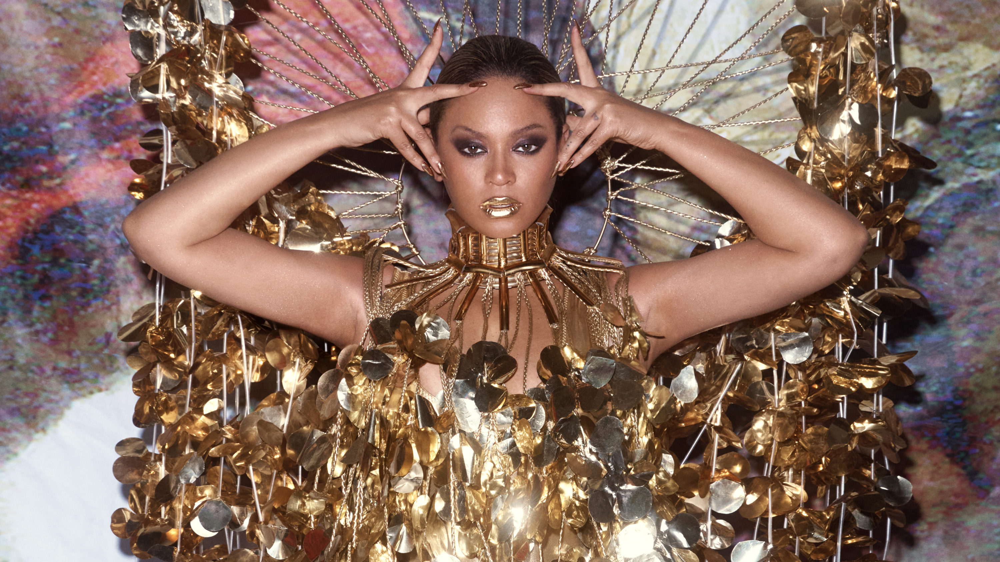

Türkiye’de eğitim alanında yapay zeka (YZ) uygulamalarının kullanımı giderek yaygınlaşıyor. Yeni projeler, öğretim sürecini kişiselleştirerek öğrencilerin bireysel ihtiyaçlarına uygun eğitim çözümleri sunmayı hedefliyor.
Yeni Hükümet Reformu Meclis'te Tartışılıyor
Yeni hükümet reform paketi, mecliste hararetli tartışmalara neden oldu. Reformun ekonomik, sosyal ve çevresel etkileri ele alınırken, muhalefet partileri reformun sosyal adaletsizliklere yol açabileceğini savunuyor. Detaylar için görsele tıklayınız.
Türkiye Milli Takımı Avrupa Şampiyonası Öncesi Hazırlıklarını Tamamladı, Büyük Beklenti
Türkiye Milli Futbol Takımı, yaklaşan Avrupa Şampiyonası öncesinde hazırlık kampını başarıyla tamamladı. Teknik direktör ve oyuncular, turnuvada iddialı olduklarını ve Türkiye'yi en iyi şekilde temsil edeceklerini belirtti. Detaylar için görsele tıklayınız.
Beyoncé’nin Yeni Albümü "Renaissance" ile Müzik Dünyasında Çığır Açtı

Ünlü şarkıcı Beyoncé, beşinci stüdyo albümü "Renaissance" ile müzik dünyasında büyük yankı uyandırdı. Albüm, çıkışından kısa süre sonra dünya çapında birçok listede birinci oldu ve eleştirmenlerden yüksek puanlar aldı. Detaylar için görsele tıklayınız.
Dolar/TL Kuru Rekor Seviyeye Yükseldi
Dolar/TL kuru, son beş yılın en yüksek seviyesine ulaştı. Ekonomistler, kurdaki dalgalanmanın dış borç ödemeleri ve enflasyon üzerindeki olumsuz etkilerine dikkat çekiyor. Detaylar için görsele tıklayınız.